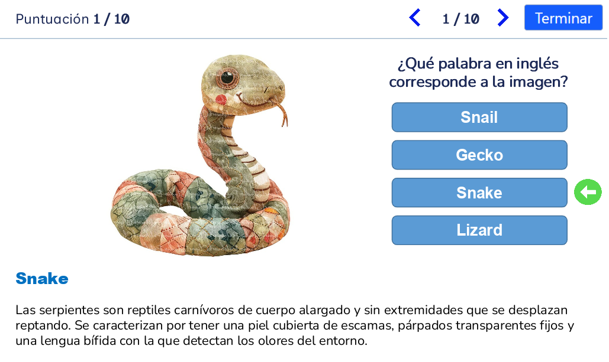

ACTIVIDAD |
|
Proyecto MF0491_3. TEST CON IMÁGENESCrear un programa que permita realizar un test/cuestionario de 10 preguntas utilizando imágenes. Ejemplo:  Las preguntas deberán guardarse en un objeto de JavaScript. Cada pregunta mostrará cuatro opciones las cuales deberán aparecer dentro de botones. Al seleccionar un botón para responder, la respuesta deberá quedar guardada en un atributo respuesta (el cual inicialmente, estará vacío). Una vez que la persona haga clic en el botón, deberá confirmarse la respuesta a través de un
Al presionar el botón El formulario no se envía, sólo se evaluará el uso correcto de campos y restricciones. Requerimientos del programa:
Todas las demás adiciones al test, no se puntúan, a menos que afecten la lógica del mismo. Deberéis subir las URL del test al siguiente formulario |
|
RESULTADO DE LA OBSERVACIÓN Y EVALUACIÓN DE LA PRÁCTICA UF1841 |
||||||
ACTIVITAT |
FACTORES |
PUNTUACIÓN |
||||
|---|---|---|---|---|---|---|
| Max | Obtenida | Min | ||||
| UF1841 | 1. HTML Semántico | 2 | 0 | |||
| 2. Legibilidad | 2 | 0 | ||||
| 3. Contraste de color | 1 | 0 | ||||
| 4. Uso adecuado y validación campos formulario | 2 | 0 | ||||
| 5. Responsividad | 1 | 0 | ||||
| 6. Uso tailwindcss | 2 | 0 | ||||
| Total | 10 | 0 | ||||
RESULTADO DE LA OBSERVACIÓN Y EVALUACIÓN DE LA PRÁCTICA UF1842 |
||||||
ACTIVITAT |
FACTORES |
PUNTUACIÓN |
||||
|---|---|---|---|---|---|---|
| Max | Obtenida | Min | ||||
| UF1842 | 1. Uso de convenciones para nombrar variables y archivos | 1 | 0 | |||
| 2. Manejo del DOM | 3 | 0 | ||||
| 3. Uso de Condicionales | 2 | 0 | ||||
| 4. Uso de bucles | 2 | 0 | ||||
| 5. Apertura/Cierre del Dialog y mensajes | 2 | 0 | ||||
| Total | 10 | 0 | ||||
RESULTADO DE LA OBSERVACIÓN Y EVALUACIÓN DE LA PRÁCTICA UF1843 |
||||||
ACTIVITAT |
FACTORES |
PUNTUACIÓN |
||||
|---|---|---|---|---|---|---|
| Max | Obtenida | Min | ||||
| UF1843 | 1. Dashboard con Ejercicios de Objetos | 3 | 0 | |||
| 2. Creación del objeto | 1 | 0 | ||||
| 3. Mapeo HTML | 1 | 0 | ||||
| 4. Funciones Flecha | 1 | 0 | ||||
| 5. Asignación/Eliminación de Escuchadores de Evento. | 1 | 0 | ||||
| 6. Lógica para el Cálculo de Puntuación | 2 | 0 | ||||
| 7. Penalización por no usar Buenas prácticas / DRY | -2 | 0 | ||||
| Total | 10 | 0 | ||||